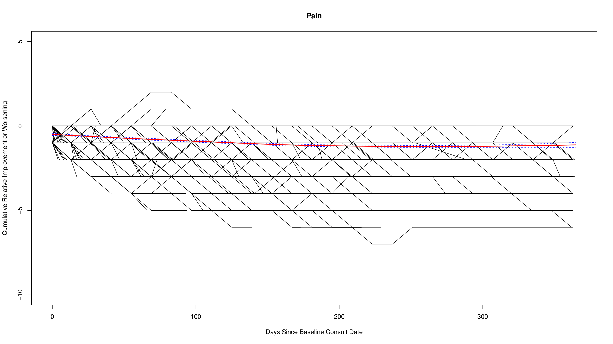
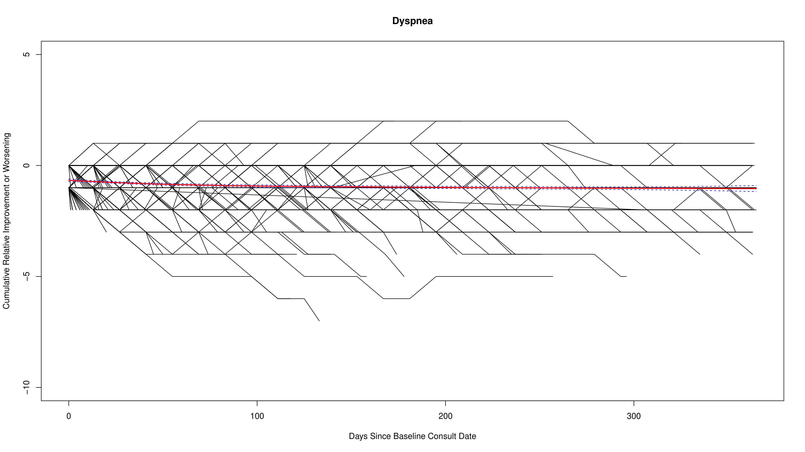
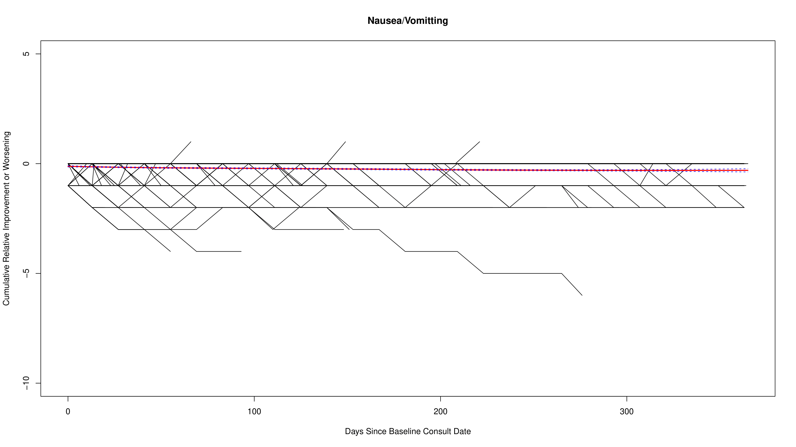
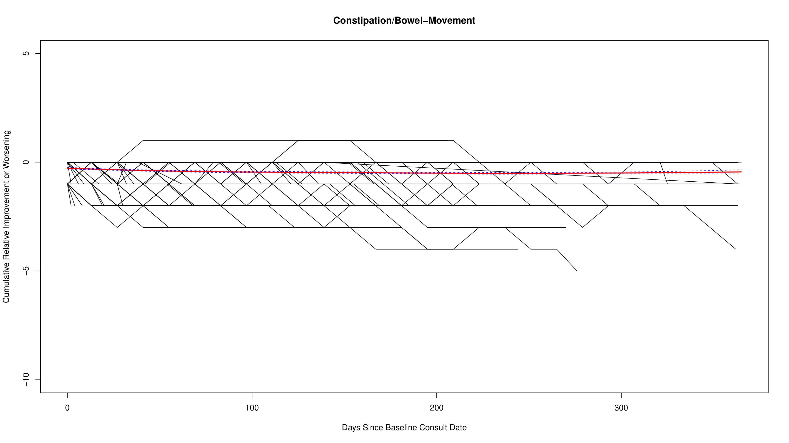

Supplementary Figures
Palliative Care Needs in Heart Failure
Figure 1: Palliative Needs Framework
Adapted framework outlining 5 domains and 14 subdomains used for needs assessment.
Figure 2: Data Collection Workflow
Overview of chart abstraction, audit process, and REDCap integration.
Figure 3: Patient Trajectory Scoring
Schematic showing how palliative care needs were scored over time.
Figure 4: Sample Patient Trajectories
Examples of cumulative need scores over time for three patients.
